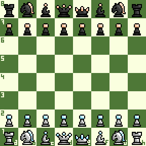

Termes échiquéens
Règles du jeu

Pour jouer aux échecs, les joueurs ont besoin au minimum d'un jeu de pièces et d'un échiquier. Une pendule est également nécessaire si les joueurs décident de disputer une partie avec une contrainte de temps. De plus, les joueurs utilisent souvent une feuille de partie pour noter leurs coups et pouvoir reconstituer leur affrontement.
Un jeu de pièces d'échecs se compose de deux armées différentes, chacune contenant huit pions, deux cavaliers, deux fous, deux tours, une dame et un roi. Les joueurs peuvent distinguer leurs pièces grâce à leur couleur, soit noires soit blanches, réminiscence des pièces en ivoire et en ébène utilisées par le passé.
L'échiquier est un plateau de 8 cases colorées sur 8 avec une alternance parfaite entre le noir et blanc, formant un damier de 64 cases. Il est divisé en huit colonnes et huit rangées.
Les pendules d'échecs permettent d'indiquer à tout moment le temps restant à chaque joueur. Elles peuvent également leur ajouter du temps supplémentaire après qu'ils aient effectué un coup (appelé incrément).
Les pions valent un point et ne sont pas considérés comme des pièces à part entière. Les cavaliers et les fous sont estimés à trois points, bien que les ordinateurs évaluent un tantinet mieux les arpenteurs des diagonales que les sauteurs d'obstacles. Ces deux pièces sont qualifiées de "mineures".
Les tours valent cinq points et la dame 9.5. Elles sont toutes classées comme pièces "lourdes". Le roi est la pièce la plus précieuse aux échecs - le "perdre" coûte la victoire.
Notez que la valeur des pièces n'est qu'un concept abstrait et ne détermine pas l'issue d'une partie. Un joueur peut gagner beaucoup de matériel mais s'incliner si son adversaire parvient à le mater .